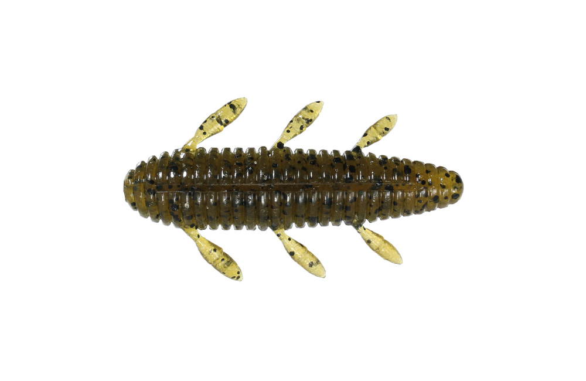
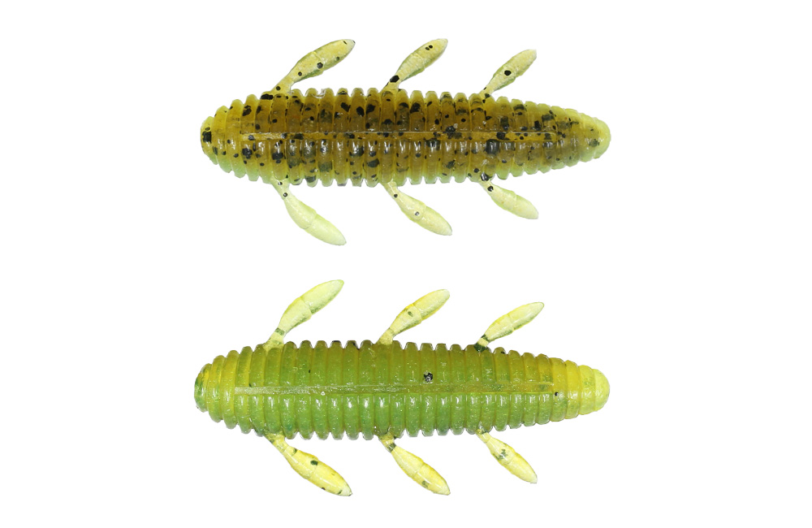
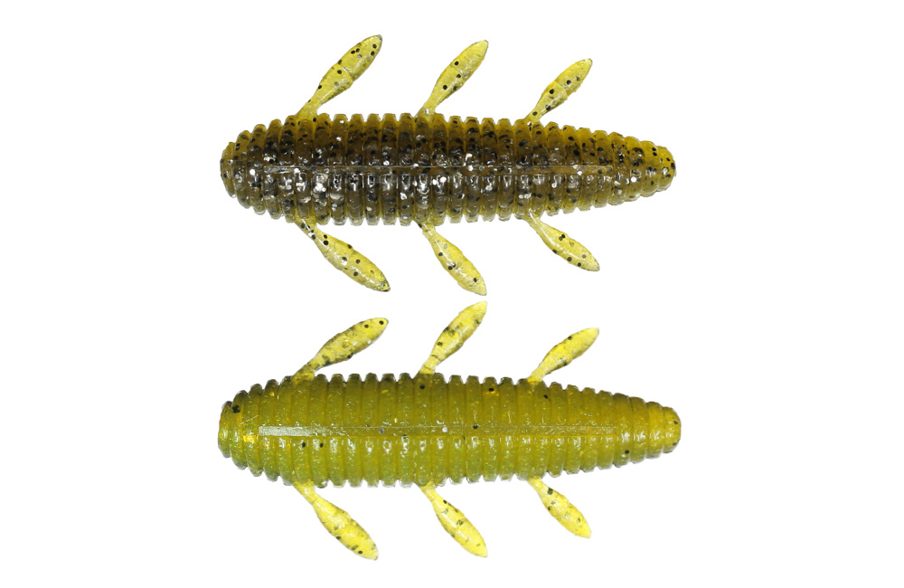
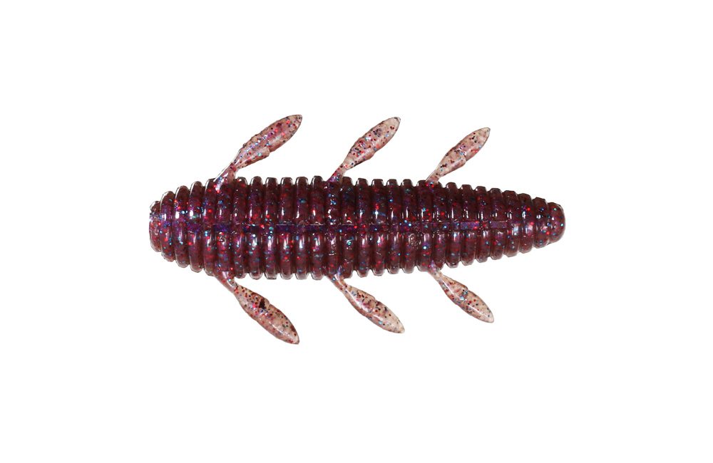

沈み蟲
沈み蟲はissei（一誠）の虫系ワームです。
細かく動く脚を3対付けたイモ虫系ボディで、シンプルかつ爆発力のあるワームです。高比重マテリアル（ヘビーソルト仕様）と流線型のボディで、ノーシンカーでもしっかり飛距離が出ます。1.8・2.2・2.6・3.2インチの4サイズ展開です。

画像出典:issei公式HP
スペック
- メーカー
- issei（一誠）
- タイプ
- 虫系ワーム（イモ虫系）
- サイズ
- 1.8in・2.2in・2.6in・3.2in
- 入数
- 1.8in：8本／2.2in：7本／2.6in・3.2in：5本
- マテリアル
- 高比重マテリアル（ヘビーソルト仕様）
- 推奨フック
- マルチオフセット（サイズ別は下の表）
- ターゲット
- ブラックバス（チヌにも）
- 価格
- 800円（税別）※3.2inは900円（税別）
▼今すぐチェック

沈み蟲の特徴
ノーシンカーでも飛んで、脚をピリピリ震わせながら沈む
-
微振動を出す3対の脚
フォールやリトリーブの時に、脚が微振動を発生させる。ノーシンカーでは脚をピリピリ動かしながら水平気味にフォールする。
-
飛距離を生む高比重・流線型ボディ
ヘビーソルト仕様の高比重マテリアルと流線型ボディで、ノーシンカーでも驚くほど飛ぶ。
-
バックスライドにもできる
ボディの太い方にネイルシンカーを入れるとバックスライドセッティングになる。カバーの奥や岸際に滑り込ませたい時に使える。
沈み蟲の使い方
基本はボディの細い方からオフセットフックを刺すノーシンカー。キャストしたら脚の動きを生かして水平フォールさせ、着底後は軽いシェイクやズル引きで誘います。
カバーの奥やオーバーハングの下に入れたい時は、ボディの太い方にネイルシンカーを入れてバックスライドセッティングに。ラインを張らずに落とすと、手前ではなく奥へ滑るように沈んでいきます。
沈み蟲の得意な状況
虫が落ちてくる季節の岸際・オーバーハング、プレッシャーが高くて強い動きのワームに反応しない時が得意です。
小さめの1.8〜2.2インチは食わせ重視、2.6〜3.2インチはカバー周りやバックスライドでの飛距離・存在感重視、と使い分けるとわかりやすいです。ボトムでの食わせが効くので、チヌ狙いで使われることもあります。
ワンポイント
セッティングによって前後のどちらからフックを刺すかが変わります。ノーシンカーは「細い方から」、バックスライドは「太い方にネイルシンカー」と覚えておきましょう。
サイズの使い分け
| サイズ | 入数・価格（税別） | 推奨フック（マルチオフセット） |
|---|---|---|
| 1.8in | 8本・800円 | #2 |
| 2.2in | 7本・800円 | #1〜1/0 |
| 2.6in | 5本・800円 | #2/0〜4/0 |
| 3.2in | 5本・900円 | #6/0 |
※数値は公式ページより。カラーはサイズによって展開が異なります。
オススメカラー
沈み蟲はサイズごとに14〜20色ほどが展開されています。全サイズで選べる定番カラーを紹介します（画像は1.8inのもの）。

#07 グリーンパンプキンまず1つ選ぶならこの色。クリア〜ステインまで幅広く使える。

#10 グリパン/チャートグリパンにチャートを組み合わせた2トーン。濁りのある時に。

#12 活エビエビを意識したカラー。エビを食べている時に。

#61 エビミソスパイシー赤みのある甲殻類系。ボトムで食わせたい時の選択肢に。
画像出典:issei公式HP
沈み蟲に似ているルアー
-
 イモグラブ40
ゲーリーヤマモト
詳細はこちら＞
イモグラブ40
ゲーリーヤマモト
詳細はこちら＞
テールの無いイモ系ワームの元祖。ノーシンカーでの食わせを比べたい時に。
-
 ベローズスティック2.8インチ
GEECRACK
詳細はこちら＞
ベローズスティック2.8インチ
GEECRACK
詳細はこちら＞
全身リブのスティックワーム。より強い水噛みで誘いたい時に。
-
 クレイジーフラッパー2.8インチ
KEITECH
詳細はこちら＞
クレイジーフラッパー2.8インチ
KEITECH
詳細はこちら＞
ウデが大きく動くクローワーム。ボトムで甲殻類を演出したい時の持ち替え先に。